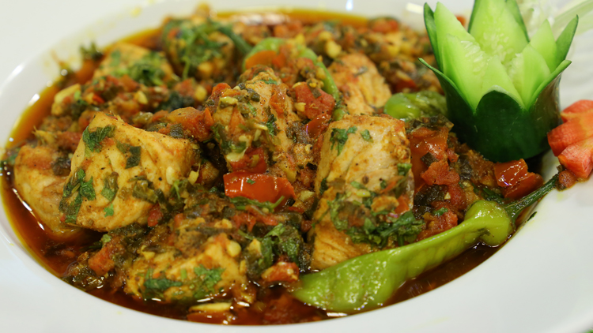

Fish Karahi | Pakistani cuisine | Spicy fish masala | With step by step pics & video | Pakistani Fish karahi is a quick curry made with lightly fried pieces of fish stewed in a tomato base with lots of herbs and ginger. The most delicious, flavorful, and spicy fish karahi! Guaranteed that this will be the best-curried fish recipe you will ever need. Prepared in a reduced tomato and green-chili base, a karahi is a popular late-night meal in Pakistani cuisine, usually consumed with naan. Similarly chicken & mutton karahi recipes are famous in Pakistani cuisine.
Back to Home